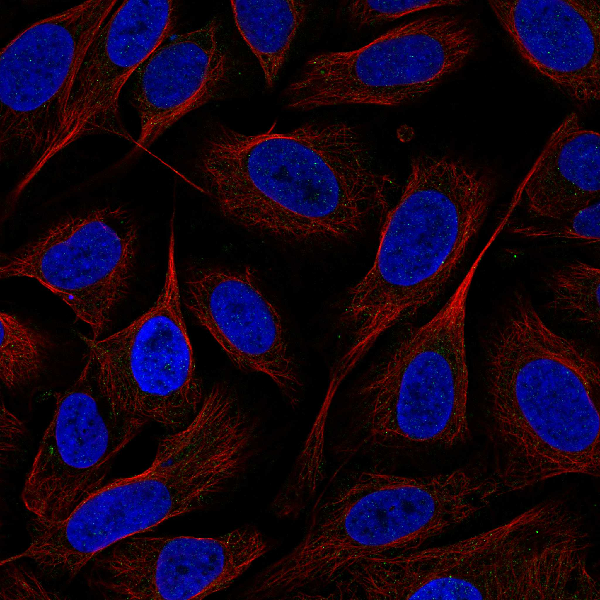
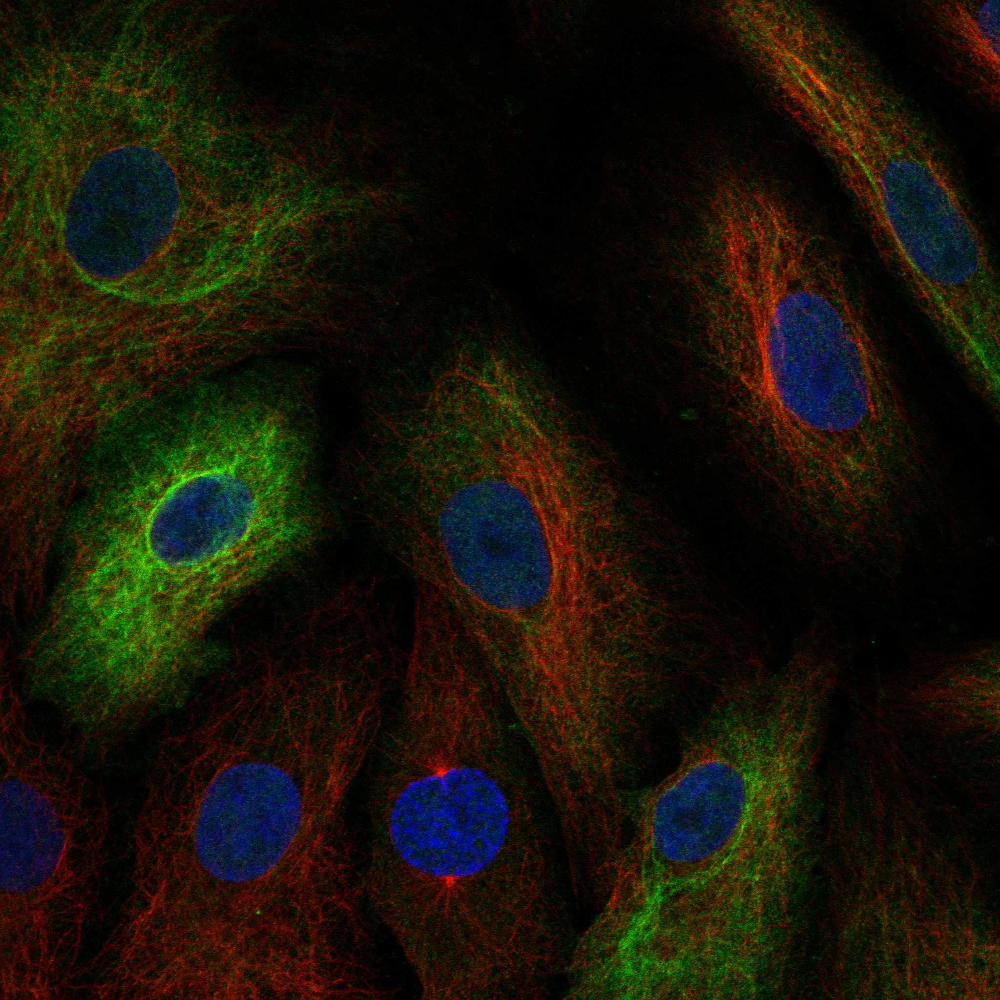

type: protein-evaluation gene: "EYA2" date: 2026-06-03 tags: [protein-scout, nuclear-protein, evaluation] status: scored ---
EYA2 核蛋白评估报告 (Full Re-evaluation)
1. 基本信息
| 项目 | 内容 |
|---|---|
| 基因名 / 别名 | EYA2 / EAB1 |
| 蛋白名称 | Protein phosphatase EYA2 |
| 蛋白大小 | 538 aa / 59.2 kDa |
| UniProt ID | O00167 |
| 评估日期 | 2026-06-03 |
IF 图像:  
2. 评分总览
| 维度 | 得分 | 满分 | 加权后 | 关键证据摘要 |
|---|---|---|---|---|
| 核定位特异性 | 7/10 | ×4 | 28 | HPA: Cytosol; UniProt: Cytoplasm; Nucleus |
| 蛋白大小 | 10/10 | ×1 | 10 | 538 aa / 59.2 kDa |
| 研究新颖性 | 2/10 | ×5 | 10 | PubMed strict=98 篇 (≤100→2) |
| 三维结构 | 6/10 | ×3 | 18 | AlphaFold v6 pLDDT=68.0; PDB: 3GEB, 3HB0, 3HB1, 4EGC, 5ZMA, 7F8G, 7F8H |
| 调控结构域 | 7/10 | ×2 | 14 | InterPro: IPR028472, IPR006545, IPR042577, IPR038102, IPR036 |
| PPI 网络 | 3/10 | ×3 | 9 | STRING 15 partners; IntAct 15 interactions |
| 互证加分 | — | max +3 | 2.5 | PDB+AF+STRING+IntAct cross-validation |
| 原始总分 | 91.5/180 | |||
| 归一化总分 | 50.8/100 |
3. 详细分析
3.1 核定位证据
| 来源 | 定位 | 可信度 |
|---|---|---|
| Protein Atlas (IF) | Cytosol | Supported |
| UniProt | Cytoplasm; Nucleus | Swiss-Prot/TrEMBL |
IF 图像获取: IF图像已下载并嵌入 (2张)
GO Cellular Component:
- cytosol (GO:0005829)
- mitochondrion (GO:0005739)
- nucleoplasm (GO:0005654)
- nucleus (GO:0005634)
结论: 主要核定位，HPA 可靠性良好，有辅助数据源支持。
3.2 蛋白大小评估
评价: 大小适中（200-800 aa），适合常规生化实验和结构解析。
3.3 研究现状
| 指标 | 数值 |
|---|---|
| PubMed strict count | 98 |
| PubMed broad count | 152 |
| 别名(未计入scoring) | Aliases observed but not used for scoring: EAB1 |
关键文献: 1. EYA2 tyrosine phosphatase inhibition reduces MYC and prevents medulloblastoma progression.. *Neuro-oncology*. PMID: 37486991 2. EYA2 suppresses the progression of hepatocellular carcinoma via SOCS3-mediated blockade of JAK/STAT signaling.. *Molecular cancer*. PMID: 34044846 3. Non-del(5q) myelodysplastic syndromes-associated loci detected by SNP-array genome-wide association meta-analysis.. *Blood advances*. PMID: 31738830 4. Targeting EYA2 tyrosine phosphatase activity in glioblastoma stem cells induces mitotic catastrophe.. *The Journal of experimental medicine*. PMID: 34617969 5. Epigenetic silencing of EYA2 in pancreatic adenocarcinomas promotes tumor growth.. *Oncotarget*. PMID: 24810906
评价: 研究基础较多，新颖性有限。
3.4 三维结构分析
| 指标 | 数值 |
|---|---|
| AlphaFold 版本 | v6 |
| AlphaFold 平均 pLDDT | 68.0 |
| 高置信度残基 (pLDDT>90) 占比 | 46.7% |
| 置信残基 (pLDDT 70-90) 占比 | 1.3% |
| 中等置信 (pLDDT 50-70) 占比 | 3.9% |
| 低置信 (pLDDT<50) 占比 | 48.1% |
| 有序区域 (pLDDT>70) 占比 | 48.0% |
| 可用 PDB 条目 | 3GEB, 3HB0, 3HB1, 4EGC, 5ZMA, 7F8G, 7F8H |
PAE (Predicted Aligned Error):
评价: AlphaFold 预测质量有限（pLDDT=68.0），有序残基占 48.0%。
3.5 结构域分析
| 来源 | 结构域 |
|---|---|
| InterPro/Pfam | InterPro: IPR028472, IPR006545, IPR042577, IPR038102, IPR036412; Pfam: PF00702 |
染色质调控潜力分析: 存在已知结构域注释，可作为功能研究的结构基础。
3.6 PPI 网络
STRING 预测互作 (combined score >0.4):
| Partner | Combined Score | Experimental | 功能类别 |
|---|---|---|---|
| SIX1 | 0.996 | 0.893 | — |
| SIX4 | 0.946 | 0.516 | — |
| SIX2 | 0.940 | 0.606 | — |
| PAX3 | 0.877 | 0.071 | — |
| DACH2 | 0.800 | 0.300 | — |
| DACH1 | 0.798 | 0.300 | — |
| MYOG | 0.761 | 0.000 | — |
| MEOX1 | 0.751 | 0.081 | — |
| SIX6 | 0.725 | 0.301 | — |
| SIX5 | 0.696 | 0.394 | — |
实验验证互作 (IntAct):
| Partner | 方法 | PMID | ||
|---|---|---|---|---|
| RBPMS | psi-mi:"MI:0398"(two hybrid pooling approach) | pubmed:16189514 | imex:IM-16520 | |
| Sharpin | psi-mi:"MI:0018"(two hybrid) | imex:IM-17347 | pubmed:20956555 | |
| Rbck1 | psi-mi:"MI:0096"(pull down) | imex:IM-17347 | pubmed:20956555 | |
| DDI1 | psi-mi:"MI:0397"(two hybrid array) | imex:IM-27438 | doi:10.1038/s414 | |
| POGZ | psi-mi:"MI:0397"(two hybrid array) | pubmed:32296183 | imex:IM-25472 | |
| ATOSB | psi-mi:"MI:0397"(two hybrid array) | pubmed:32296183 | imex:IM-25472 | |
| IQUB | psi-mi:"MI:0397"(two hybrid array) | pubmed:32296183 | imex:IM-25472 | |
| DUSP21 | psi-mi:"MI:0397"(two hybrid array) | pubmed:32296183 | imex:IM-25472 | |
| DTX2 | psi-mi:"MI:1356"(validated two hybrid) | pubmed:32296183 | imex:IM-25472 | |
| CATSPER1 | psi-mi:"MI:1356"(validated two hybrid) | pubmed:32296183 | imex:IM-25472 |
PPI 互证分析:
- STRING + IntAct 均有数据
- STRING partners: 15，IntAct interactions: 15
- 调控相关比例: 0 / 15 = 0%
评价: STRING 15 个预测互作，IntAct 15 个实验互作。调控相关配体占比 0%。
3.7 多库互证
| 维度 | 来源 | 结果 | 是否一致 |
|---|---|---|---|
| 三维结构 | AlphaFold pLDDT=68.0 + PDB: 3GEB, 3HB0, 3HB1, 4EGC, 5ZMA, | pLDDT=68.0, v6 | 预测+实验 |
| 定位 | UniProt + HPA | Cytoplasm; Nucleus / Cytosol | 一致 |
| PPI | STRING + IntAct | 15 + 15 interactions | 数据充分 |
互证加分明细:
- PDB + AlphaFold 双源验证: +0.5
- 多库定位一致 (3源): +0.5
- STRING + IntAct 双源验证: +0.5
- 结构域 + AlphaFold 质量: +0
- PDB 多条目覆盖 (≥3): +1.0
总分: +2.5 / max +3
4. 总体评价
推荐等级: ⭐⭐⭐
核心优势: 1. EYA2 — Protein phosphatase EYA2，研究基础较多，新颖性有限。 2. 蛋白大小538 aa，大小适中（200-800 aa），适合常规生化实验和结构解析。
风险/不确定性: 1. PubMed 98 篇，已有一定研究基础 2. AlphaFold 预测质量一般（pLDDT=68.0），需要更多实验结构验证
下一步建议:
- [ ] 查阅最新关键文献补充研究背景
- [ ] 获取 Protein Atlas IF 图像确认亚细胞定位
- [ ] 设计体外实验验证核定位及潜在调控功能
5. 数据来源
- UniProt: https://www.uniprot.org/uniprotkb/O00167
- Protein Atlas: https://www.proteinatlas.org/ENSG00000064655-EYA2/subcellular
- PubMed: https://pubmed.ncbi.nlm.nih.gov/?term=EYA2
- AlphaFold: https://alphafold.ebi.ac.uk/entry/O00167
- STRING: https://string-db.org/network/9606.ENSP00000
- Data fetched live: 2026-06-03
<!-- DOMAIN_HUMANPPI_REPAIR_START -->
Domain/SMART 与 humanPPI 补充（2026-06-07）
SMART / UniProt domain
| Source | Data |
|---|---|
| UniProt | O00167 |
| SMART | 未在 UniProt xref 中检出 SMART 条目 |
| UniProt Domain [FT] | 未检出显式 UniProt Domain feature |
| InterPro | IPR028472;IPR006545;IPR042577;IPR038102;IPR036412; |
| Pfam | PF00702; |
humanPPI / HPA Interaction
Source: https://www.proteinatlas.org/ENSG00000064655-EYA2/interaction
| Partner | Datasets | AF3/HPA structure |
|---|---|---|
| SIX1 | Intact, Biogrid | true |
| ACAD9 | Biogrid | false |
| BAG3 | Biogrid | false |
| FBXO7 | Biogrid | false |
| GNAI2 | Biogrid | false |
| GNAZ | Biogrid | false |
| SIX4 | Biogrid | false |
<!-- DOMAIN_HUMANPPI_REPAIR_END -->